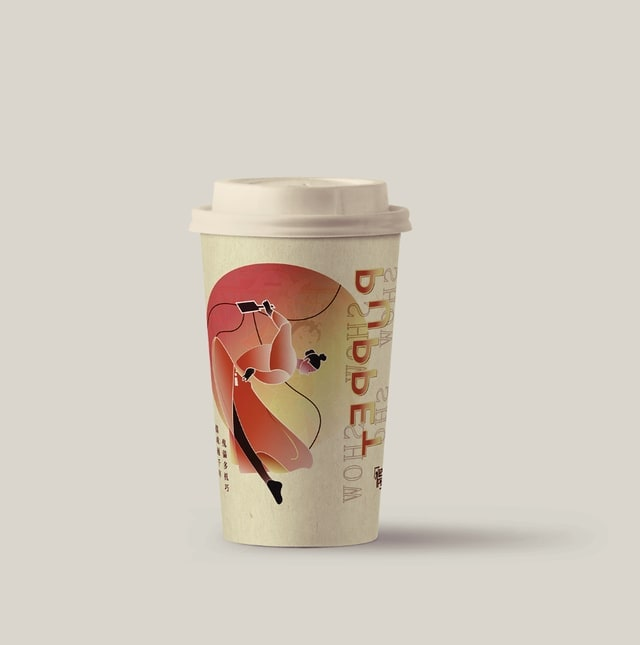
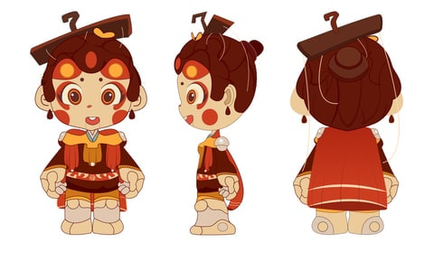

05
视觉设计 / 案例建设中
测试案例图片文字
IMAGE LEAD BODY TEST
验证每张图片拥有独立的 Lead 与 Body。
EXPLORE THE PROCESS · 从概念到落地01 / OVERVIEW
三图三文字
在此补充项目背景与目标。
第二张图片的 Lead
第二张图片的 Body 正文。

第三张图片的 Lead
第三张图片的 Body 正文。

第一张图片的 Lead
第一张图片的 Body 正文。